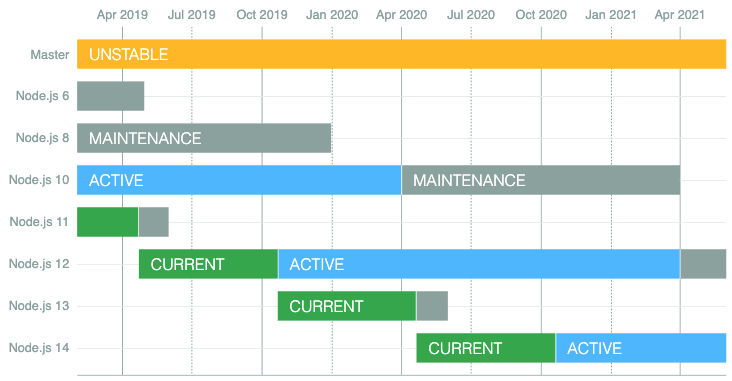
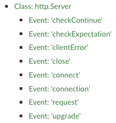

# Node.js Introduction Learn how to use [Node.js][node], an asynchronous JavaScript runtime that can run on your local machine or server. **You will need** * A Unix CLI **Recommended reading** * [Command line](../cli/) * [JavaScript](../js/) --- class: center, middle, image-header ## What is [Node.js][node]? .breadcrumbs[<a href="#1">Node.js Introduction</a>] <p class='center'><img src='images/node.png' width='50%' /></p> > "Node.js is an **asynchronous JavaScript runtime** built on Chrome's V8 > JavaScript engine. Node.js uses an **event-driven**, **non-blocking I/O** > model that makes it lightweight and efficient." > "Node.js is used on servers to develop fast, scalable web applications." --- ### Installation .breadcrumbs[<a href="#1">Node.js Introduction</a> > <a href="#2">What is [Node.js][node]?</a>] <p class='center'></p> --- ### Which Node.js version to choose? .breadcrumbs[<a href="#1">Node.js Introduction</a> > <a href="#2">What is [Node.js][node]?</a>] <p class='center'></p> * Odd-numbered versions (e.g. v11, v13, v15, v17, v19) are **unstable** releases with the latest features, and will **no longer be supported after 6-9 months**. * Even-numbered versions (e.g. v8, v10, v12, v14, v16, v18, v20) have [**long term support (LTS)**][node-lts]. They are actively developed for 6 months, but maintained for a total of 30 months (e.g. security fixes). Production applications should use LTS releases. --- ### Install Node.js and make sure it works .breadcrumbs[<a href="#1">Node.js Introduction</a> > <a href="#2">What is [Node.js][node]?</a>] Download and install Node.js now. Once the installation is done, you should be able to display the version in your CLI: ```bash $> node --version v20.7.0 ``` By simply running the `node` command without any arguments, you can also open an interactive Node.js [REPL][repl] (note the prompt change indicating that you are in the Node.js console): ```bash $> node > 1 + 2 3 ``` Type `.exit` or press `Ctrl-C` twice to exit. --- ### Create and execute a Node.js file .breadcrumbs[<a href="#1">Node.js Introduction</a> > <a href="#2">What is [Node.js][node]?</a>] Create a `script.mjs` file in a new `node-demo` project directory: ```js function hello(name) { console.log(\`Hello ${name}!`); } hello('World'); ``` Execute it by running it with the `node` executable: ```bash $> cd /path/to/projects/node-demo $> node script.mjs Hello World! ``` Originally, JavaScript was only executable in web browsers, but here you are running JavaScript code **locally with Node.js**, like you would other scripting languages (e.g. PHP, Ruby or Python). --- ### Node.js modules .breadcrumbs[<a href="#1">Node.js Introduction</a> > <a href="#2">What is [Node.js][node]?</a>] Node.js code is organized in **modules**. These are the core modules available to you out of the box (with those that you are likely to use in most applications highlighted): Assertion testing, Async hooks, Buffer, C++ addons, C/C++ addons with N-API, C++ embedder API, **Child processes**, Cluster, Command line options, Console, **Crypto**, Debugger, Deprecated APIs, DNS, Domain, Errors, **Events**, **File system**, Globals, **HTTP**, **HTTP/2**, **HTTPS**, Inspector, Internationalization, Modules: CommonJS modules, Modules: ECMAScript modules, Modules: module API, Net, OS, **Path**, Performance hooks, Policies, **Process**, Punycode, **Query strings**, Readline, REPL, Report, **Stream**, String decoder, Timers, **TLS/SSL**, Trace events, TTY, UDP/datagram, **URL**, Utilities, V8, VM, WASI, Worker threads, Zlib. > Refer to the [documentation][node-20-api] for more information. --- ### Requiring core modules .breadcrumbs[<a href="#1">Node.js Introduction</a> > <a href="#2">What is [Node.js][node]?</a>] You can get a hold of Node.js's modules in your code by simply `import`-ing the name of the module. The following example requires the [`os` module][node-module-os], which provides operating system-related utility methods: ```js // Import the operating system core module *import os from 'os'; function hello(name) { console.log(\`Hello ${name}!`); * console.log(\`I am running on ${os.platform()}`); } hello('World'); ``` This will log the platform on which you are running: ```bash $> node script.mjs Hello World! I am running on darwin ``` --- ### A note on Node.js and CommonJS modules .breadcrumbs[<a href="#1">Node.js Introduction</a> > <a href="#2">What is [Node.js][node]?</a>] Node.js was first released in 2009, before [ECMAScript 2015's modules][esm] were standardized. At the time, there were many module systems in the wild like [CommonJS][commonjs] and [RequireJS](requirejs). Node.js chose CommonJS, based on `require`. Node.js treats JavaScript code as CommonJS modules by default. You can [tell Node.js to treat your code as ECMAScript modules][node-20-esm-enabling] by naming your files with the `.mjs` extension instead of `.js`. If you have a `package.json` file (we'll learn more about these later), you can also set the `type` property to `module`. This is what a CommonJS-based Node.js file used to look like: ```js *const os = require('os'); function hello(name) { console.log(\`Hello ${name}!`); console.log(\`I am running on ${os.platform()}`); } hello('World'); ``` > Since ECMAScript modules are now [natively supported][node-20-esm], we will > use them rather than the obsolete `require`. --- ### Writing your own module .breadcrumbs[<a href="#1">Node.js Introduction</a> > <a href="#2">What is [Node.js][node]?</a>] Let's say we want to extract the `hello` function to another module. Create a `utils.mjs` file: ```js import os from 'os'; // Attach properties to exports so that you can use // them when requiring this file export function hello(name) { console.log(\`Hello ${name}!`); console.log(\`I am running on ${os.platform()}`); }; ``` `export`-ing things is what allow you to `import` them from other files. --- ### Importing local modules .breadcrumbs[<a href="#1">Node.js Introduction</a> > <a href="#2">What is [Node.js][node]?</a>] You also use `import` for your own module, but instead of just a name you have to provide a **file path** (relative or absolute). Modify `script.mjs` as follows: ```js // Import everything from the utils.mjs file in the current directory *import * as utils from './utils.mjs'; // Use the exported function utils.hello('World'); ``` It should still work: ```bash $> node script.mjs Hello World! I am running on darwin ``` --- ### Importing specific exports .breadcrumbs[<a href="#1">Node.js Introduction</a> > <a href="#2">What is [Node.js][node]?</a>] You don't have to import everything. You can also import only what you need using a syntax similar to a [destructuring assignment][destructuring-assignment]: ```js // Import specific exports from the utils.mjs file in the current directory *import { hello } from './utils.mjs'; // Use the exported function hello('World'); ``` It should still work: ```bash $> node script.mjs Hello World! I am running on darwin ``` --- ### Export properties .breadcrumbs[<a href="#1">Node.js Introduction</a> > <a href="#2">What is [Node.js][node]?</a>] You can `export` whatever you want: ```js `export const theMeaningOfLife` = 42; ``` And use it where it is required: ```js import { hello`, theMeaningOfLife` } from './utils.mjs'; hello('World'); *console.log(\`The meaning of life is ${theMeaningOfLife}`); ``` This will print: ```bash $> node script.mjs Hello World! I am running on darwin *The meaning of life is 42 ``` --- ### Function as the main export .breadcrumbs[<a href="#1">Node.js Introduction</a> > <a href="#2">What is [Node.js][node]?</a>] Some modules only export a function instead of an object with properties. Add a `doIt.mjs` file: ```js // Define a default export `export default` function() { console.log('Doing it'); }; ``` Modify `script.mjs`: ```js *import doIt from './doIt.mjs'; import { hello, theMeaningOfLife } from './utils.mjs'; hello('World'); console.log(\`The meaning of life is ${theMeaningOfLife}`); *doIt(); ``` The additional text `Doing it` will be logged as well. --- ### Import syntax .breadcrumbs[<a href="#1">Node.js Introduction</a> > <a href="#2">What is [Node.js][node]?</a>] A short summary on how to require files: Statement | Effect :----------------------------------------- | :--------------------------------------------------------------------------------------------------------- `import core from 'coreModule'` | Import the core module (or npm package, more on that later) named `coreModule` `import * as foo from './foo.mjs'` | Import everything exported by the `foo.mjs` file in the current directory (relative to the current file) `import { a, b } from './foo.mjs'` | Import specific exports from the `foo.mjs` file in the current directory (relative to the current file) `import * as baz from './foo/bar/baz.mjs'` | Import everything exported by the `baz.mjs` file in the `foo/bar` directory (relative to the current file) `import * as qux from '../../qux.mjs'` | Import everything exported by the `qux.mjs` file two directories above (relative to the current file) --- class: center, middle ## Synchronous vs. Asynchronous .breadcrumbs[<a href="#1">Node.js Introduction</a>] --- ### Synchronous code .breadcrumbs[<a href="#1">Node.js Introduction</a> > <a href="#16">Synchronous vs. Asynchronous</a>] Basic JavaScript code is synchronous. It means that only one command or function can be executed at a time. ```js function getRandomNumber() { return Math.random(); } console.log('Hello'); const result = getRandomNumber(); console.log(\`Result: ${result}`); console.log('End of program'); ``` Code executes **sequentially**: ```txt Hello Result: 0.12438 End of program ``` The call to `getRandomNumber()` blocks the thread until its execution is complete. --- ### Asynchronous code .breadcrumbs[<a href="#1">Node.js Introduction</a> > <a href="#16">Synchronous vs. Asynchronous</a>] With asynchronous code, some operations are executed **in parallel**: ```js import fs from 'fs'; console.log('Hello'); // List the files at the root of the file system fs.readdir('/', function(err, result) { console.log(\`Files: ${result.join(', ')}`); console.log('Done'); }); console.log('End of program'); ``` Code execution is **not sequential**: ```txt Hello End of program Files: file.txt, dir, other-file.txt Done ``` How does this work? --- ### Non-blocking I/O .breadcrumbs[<a href="#1">Node.js Introduction</a> > <a href="#16">Synchronous vs. Asynchronous</a>] The signature of `fs.readFile` is: ``` fs.readFile(file[, options], callback) ``` The third argument is a **callback function**: * With synchronous code, the call blocks the thread until it is done * With asynchronous code, the rest of the code **keeps executing**; you pass a function to `fs.readFile` and Node.js will **call you back** when it is done Under the hood, Node.js will read the file in a separate thread, then execute your callback function when it's ready. This is called **non-blocking I/O**, because all I/O operations are executed in separate threads and are therefore non-blocking: * Database access * File system access * HTTP requests * Etc. --- ### Your Node.js code is single-threaded .breadcrumbs[<a href="#1">Node.js Introduction</a> > <a href="#16">Synchronous vs. Asynchronous</a>] Although I/O operations are non-blocking, **your code always executes in a single thread**: ```js import fs from 'fs'; let fileCount = 0; fs.readdir('/', function(err, result) { `fileCount = fileCount + result.length`; console.log(\`Files listed: ${fileCount}`); }); console.log(\`End of program: ${fileCount}`); ``` This will **always** log `End of program: 0` first, then `Files listed: N`. Even if the operating system is very fast and the directory is listed *instantaneously*, Node.js **guarantees** that the last line, `console.log('End of program:', fileCount)`, will be executed first. Callback functions will always wait for **blocking code** to finish executing. --- ## The event loop .breadcrumbs[<a href="#1">Node.js Introduction</a>] The [event loop][event-loop] is the main component of JavaScript's concurrency model, and is what produces the behavior described in the previous slides. <p class='center'><img class='w95' src='images/event-loop.png' /></p> ??? * Event loop: * Run the initial script (which will register callbacks) * Get the next event in the queue * Invoke the registered callbacks in sequence * Delegate I/O operations to the Node platform (in separate, non-blocking threads) --- ### A short reminder .breadcrumbs[<a href="#1">Node.js Introduction</a> > <a href="#21">The event loop</a>] Before explaining the event loop, you must be clear on something. You've probably often encountered something that looks like this while programming (not this specific message, but similar-looking blocks of lines in a console): ``` Error: Both arguments must be numbers at add (/path/to/project/st-demo.mjs:3:11) at compute (/path/to/project/st-demo.mjs:10:10) at demo (/path/to/project/st-demo.mjs:14:17) at Object.<anonymous> (/path/to/project/st-demo.mjs:18:1) at Module._compile (internal/modules/cjs/loader.js:689:30) at Object.Module._extensions..js (internal/modules/cjs/loader.js:700:10) at Module.load (internal/modules/cjs/loader.js:599:32) at tryModuleLoad (internal/modules/cjs/loader.js:538:12) at Function.Module._load (internal/modules/cjs/loader.js:530:3) at Function.Module.runMain (internal/modules/cjs/loader.js:742:12) ``` What is this called and what does it mean? --- #### Reading a stack trace .breadcrumbs[<a href="#1">Node.js Introduction</a> > <a href="#21">The event loop</a> > <a href="#22">A short reminder</a>] ``` Error: Both arguments must be numbers at `add` (/path/to/project/`st-demo.mjs:3`:11) at `compute` (/path/to/project/`st-demo.mjs:10`:10) at `demo` (/path/to/project/`st-demo.mjs:14`:17) at Object.<anonymous> (/path/to/project/`st-demo.mjs:18`:1) ``` Here's the `st-demo.mjs` file: ```js function add(a, b) { if (typeof a !== 'number' || typeof b !== 'number') { * throw new Error('Both arguments must be numbers'); } return a + b; } function compute(a, b, op) { * return op(a, b); } function demo() { * const value = compute(2, 'foo', add); console.log(value); } *demo(); ``` --- ### The call stack .breadcrumbs[<a href="#1">Node.js Introduction</a> > <a href="#21">The event loop</a>] The [**call stack**][stack] is a mechanism for the JavaScript interpreter to keep track of its place in a script that calls multiple functions: what function is being run, which should be called next, etc. * When called, a function is added to the top of the stack. * Functions called by that function are added to the stack further up. * When a function finishes, the interpreter takes it off the stack and resumes where it left off in the last stack item. .grid-40[ **What will the stack look like** as the following code is executed? [Check it out with Loupe](http://latentflip.com/loupe/?code=ZnVuY3Rpb24gbXVsdGlwbHkoYSwgYikgewogIHJldHVybiBhICogYjsKfQoKZnVuY3Rpb24gc3F1YXJlKGEpIHsKICByZXR1cm4gbXVsdGlwbHkoYSwgYSk7Cn0KCmZ1bmN0aW9uIHByaW50U3F1YXJlKGEpIHsKICBjb25zdCBzcXVhcmVkID0gc3F1YXJlKGEpOwogIGNvbnNvbGUubG9nKHNxdWFyZWQpOwp9CgpwcmludFNxdWFyZSg0KTs%3D!!!PGJ1dHRvbj5DbGljayBtZSE8L2J1dHRvbj4%3D) ] .grid-60[ ```js function multiply(a, b) { return a * b; } function square(a) { return multiply(a, a); } function printSquare(a) { const squared = square(a); console.log(squared); } printSquare(4); ``` ] --- ### Stack overflow .breadcrumbs[<a href="#1">Node.js Introduction</a> > <a href="#21">The event loop</a>] Taking into account the fact that the call stack has a limited size (unfortunately, your computer does not have infinite memory), **what will happen to the call stack** when the following code is run? ```js function eagerlyMultiply(a) { return a * eagerlyMultiply(a); } eagerlyMultiply(); ``` [Check it out with Loupe](http://latentflip.com/loupe/?code=ZnVuY3Rpb24gZWFnZXJseU11bHRpcGx5KGEpIHsKICByZXR1cm4gYSAqIGVhZ2VybHlNdWx0aXBseShhKTsKfQoKZWFnZXJseU11bHRpcGx5KCk7!!!PGJ1dHRvbj5DbGljayBtZSE8L2J1dHRvbj4%3D) --- ### Platform APIs .breadcrumbs[<a href="#1">Node.js Introduction</a> > <a href="#21">The event loop</a>] The **JavaScript runtime** (whether in Node.js or a web browser) **can only run one thing at a time**. But some functions are not run by the Node.js runtime; they are run by the underlying platform: the v8 engine for Node.js or the web browser for a website. For example: * `readFile` (Node.js API) * `fetch` (Experimental Node.js & Web API) * `setTimeout` (Node.js & Web API) .grid-40[ **What will happen** when the following code is run? [Check it out with Loupe](http://latentflip.com/loupe/?code=ZnVuY3Rpb24gcHJvZ3JhbSgpIHsKICBjb25zb2xlLmxvZygnU3RhcnQgb2YgcHJvZ3JhbScpOwoKICBzZXRUaW1lb3V0KGZ1bmN0aW9uIGNiKCkgewogICAgY29uc29sZS5sb2coJ0hlbGxvJyk7CiAgfSwgNTAwMCk7CgogIGNvbnNvbGUubG9nKCdFbmQgb2YgcHJvZ3JhbScpOwp9Cgpwcm9ncmFtKCk7!!!PGJ1dHRvbj5DbGljayBtZSE8L2J1dHRvbj4%3D) ] .grid-60[ ```js function program() { console.log('Start of program'); setTimeout(function cb() { console.log('Hello'); }, 5000); console.log('End of program'); } program(); ``` ] --- #### The JavaScript runtime is single-threaded .breadcrumbs[<a href="#1">Node.js Introduction</a> > <a href="#21">The event loop</a> > <a href="#26">Platform APIs</a>] What does this mean? Let's use `setTimeout` as before, but this time set the value of the timeout to zero. It should call the function right away, right? .grid-40[ **What will happen** when the following code is run? [Check it out with Loupe](http://latentflip.com/loupe/?code=ZnVuY3Rpb24gcHJvZ3JhbSgpIHsKICBjb25zb2xlLmxvZygnU3RhcnQgb2YgcHJvZ3JhbScpOwoKICBzZXRUaW1lb3V0KGZ1bmN0aW9uIGNiKCkgewogICAgY29uc29sZS5sb2coJ0hlbGxvJyk7CiAgfSwgMCk7CgogIGNvbnNvbGUubG9nKCdFbmQgb2YgcHJvZ3JhbScpOwp9Cgpwcm9ncmFtKCk7!!!PGJ1dHRvbj5DbGljayBtZSE8L2J1dHRvbj4%3D) ] .grid-60[ ```js function program() { console.log('Start of program'); setTimeout(function cb() { console.log('Hello'); }, `0`); console.log('End of program'); } program(); ``` ] --- ### Other event-driven, non-blocking I/O architectures .breadcrumbs[<a href="#1">Node.js Introduction</a> > <a href="#21">The event loop</a>] Node.js is not the only tool to use an event-driven architecture with an event loop. Similar mechanisms are used in other frameworks and tools: * JavaScript running in the browser also runs on an event loop * [Event Machine][event-machine] (Ruby event-processing library) * [nginx][nginx] (web server written in C with an event-driven architecture) * [Twisted][twisted] (Python event-driven networking engine) --- ## Node.js callback convention .breadcrumbs[<a href="#1">Node.js Introduction</a>] Node.js callback functions usually have this signature: ``` function(err, result) ``` Like the previous example: ```js fs.readdir('/', `function(err, result) {` // ... `}`); ``` There are two ways that the function can be called back by Node.js: 1. The operation **failed**: * `err` contains an **error** describing the problem * `result` is `null` or `undefined` 2. The operation **succeeded**: * `err` is `null` or `undefined` * `result` contains the **result** of the operation --- ### **Always** check for errors .breadcrumbs[<a href="#1">Node.js Introduction</a> > <a href="#29">Node.js callback convention</a>] You should never forget to check for errors: ```js import fs from 'fs'; fs.readFile('name.txt', 'utf-8', function(err, data) { * if (err) { * return console.warn(\`Could not read the file because: ${err.message}`); * } console.log('Hello ' + data); }); ``` If you forget to check `err`, this code could log `Hello undefined` if the operation fails (e.g. the file doesn't exist, is corrupt, etc). Do not forget the `return` either, or use `else`, to ensure that your "success" code is not run when an error occurs. --- ### A note on Node.js and callbacks .breadcrumbs[<a href="#1">Node.js Introduction</a> > <a href="#29">Node.js callback convention</a>] Similarly to ECMAScript modules, [Promises][promise] were not yet part of ECMAScript when Node.js was first released, so the handling of asynchronous operations was built on callback functions, as we've seen: ```js // List the files at the root of the file system fs.readdir('/', function(err, result) { // handle error or result }); ``` Today many Node.js libraries, and some Node.js core modules, also support promises. For example, the File System module provides an [alternative Promises API](https://nodejs.org/api/fs.html#fs_fs_promises_api) which you can access with `fs.promises`: ```js // List the files at the root of the file system fs.promises.readdir('/').then(result => { // handle result }, err => { // handle error }); ``` > Since you can use promies, that means you can also write your Node.js code > with [`async/await`][async] if you wish. --- class: center, middle ## Spot the mistake .breadcrumbs[<a href="#1">Node.js Introduction</a>] --- ### Mistake 1 .breadcrumbs[<a href="#1">Node.js Introduction</a> > <a href="#32">Spot the mistake</a>] What's wrong with this code? ```js import fs from 'fs'; // Save a salutation into hello.txt const newSalutation = 'Hello Bob!'; fs.writeFile('hello.txt', newSalutation, 'utf-8', function(err) { if (err) { console.warn(\`Could not write in file because: ${err.message}`); } }); // Read the salutation from hello.txt const salutation = fs.readFile('hello.txt', 'utf-8', function(err, data) { if (err) { return console.warn(\`Could not read file because: ${err.message}`); } return data; }); // Log the salutation read from hello.txt console.log(salutation); ``` Save it to a file and run it with `node` to see the issue. --- #### Mistake 1 result .breadcrumbs[<a href="#1">Node.js Introduction</a> > <a href="#32">Spot the mistake</a> > <a href="#33">Mistake 1</a>] If you save the script to `bug1.mjs` and execute it this is what will happen: ```bash $> node bug1.mjs undefined ``` --- #### Mistake 1 asynchronous issue .breadcrumbs[<a href="#1">Node.js Introduction</a> > <a href="#32">Spot the mistake</a> > <a href="#33">Mistake 1</a>] There are two problems with this code. First, Node.js I/O functions (such as file operations) are **asynchronous**. When `fs.writeFile()` is called, Node.js will start a thread and write the file in the background. Meanwhile, **your code will keep executing** and the call to `fs.readFile` will occur **before the callback function of `fs.writeFile` is called back** and **before Node.js is done writing the file**. ```js // Save a salutation into hello.txt const newSalutation = 'Hello Bob!'; `fs.writeFile`('hello.txt', newSalutation, 'utf-8', function(err) { if (err) { console.warn(\`Could not write in file because: ${err.message}`); } }); // Read the salutation from hello.txt const salutation = `fs.readFile`('hello.txt', 'utf-8', function(err, data) { if (err) { return console.warn(\`Could not read file because: ${err.message}`); } return data; }); ``` --- #### Mistake 1 return issue .breadcrumbs[<a href="#1">Node.js Introduction</a> > <a href="#32">Spot the mistake</a> > <a href="#33">Mistake 1</a>] Second, even if there was no asynchronous issue, the assignment of `const salutation` would still be `undefined`: * You are calling `fs.readFile()`, which **always** returns `undefined`, and that is what is stored in the `salutation` variable. * **When** Node.js is done reading the file in a separate thread, **it will call your callback function (later)**. * The `return data;` of your callback function is **not going anywhere**. ```js // Read the salutation from hello.txt `const salutation = fs.readFile`('hello.txt', 'utf-8', function(err, data) { if (err) { return console.warn(\`Could not read file because: ${err.message}`); } `return data;` }); ``` --- #### Mistake 1 correct implementation .breadcrumbs[<a href="#1">Node.js Introduction</a> > <a href="#32">Spot the mistake</a> > <a href="#33">Mistake 1</a>] The second asynchronous call must be performed **inside the callback function of the previous call**. That way, it will not be executed **until the first call is done** and Node.js has called your callback function. The `console.log()` must also be performed **inside the second callback**. ```js import fs from 'fs'; // Save a salutation into hello.txt const newSalutation = 'Hello Bob!'; fs.writeFile('hello.txt', newSalutation, 'utf-8', `function(err) {` if (err) { console.warn(\`Could not write in file because: ${err.message}`); } // Read the salutation from hello.txt fs.readFile('hello.txt', 'utf-8', `function(err, data) {` if (err) { return console.warn(\`Could not read file because: ${err.message}`); } // Log the salutation read from hello.txt `console.log(data);` `}`); `}`); ``` --- #### Mistake 1 async/await implementation .breadcrumbs[<a href="#1">Node.js Introduction</a> > <a href="#32">Spot the mistake</a> > <a href="#33">Mistake 1</a>] If the module or library you are using supports promises, you can also use [`async/await`][async] to avoid nested callbacks and improve the readability of the code. As we've seen, that is the case for [Node'js file system API](https://nodejs.org/api/fs.html#fs_fs_promises_api): ```js import fs from 'fs'; execute().catch(err => console.warn(\`An error occurred: ${err.message}`)); `async function` execute() { // Save a salutation into hello.txt const newSalutation = 'Hello Bob!'; `await fs.promises.writeFile`('hello.txt', newSalutation, 'utf-8'); // Read the salutation from hello.txt const salutations = `await fs.promises.readFile`('hello.txt', 'utf-8'); // Log the salutation read from hello.txt console.log(salutations); } ``` --- ### Mistake 2 .breadcrumbs[<a href="#1">Node.js Introduction</a> > <a href="#32">Spot the mistake</a>] This is an example of **error handling**. The intended behavior is that if the file does not exist, the text `Could not read file because: some error` should be printed, otherwise it should print the contents of the file in upper case. ```js import fs from 'fs'; // Read the contents of a file fs.readFile('file-that-does-not-exist.txt', 'utf-8', function(err, text) { if (err) { console.warn(\`Could not read file because: ${err.message}`); } // Log the salutation in upper case console.log(text.toUpperCase()); }); ``` What's wrong with this code? --- #### Mistake 2 result .breadcrumbs[<a href="#1">Node.js Introduction</a> > <a href="#32">Spot the mistake</a> > <a href="#39">Mistake 2</a>] If you save this script in `bug2.mjs` and execute it, this is what will happen: ```bash $> node bug2.mjs Could not read file because: ENOENT: no such file or directory, open 'file-...' /path/to/projects/node-demo/bug2.mjs:9 console.log(text.toUpperCase()); ^ TypeError: Cannot read property 'toUpperCase' of undefined at ReadFileContext.callback (/path/to/projects/node-demo/bug2.mjs:9:19) at FSReqWrap.readFileAfterOpen [as oncomplete] (fs.js:365:13) ``` As expected, we see the `Could not read file because: ...` log. But we also see another **unexpected error** and its stack trace. --- #### Mistake 2 issue .breadcrumbs[<a href="#1">Node.js Introduction</a> > <a href="#32">Spot the mistake</a> > <a href="#39">Mistake 2</a>] There is an error check, but execution of the callback function is **not stopped** as there is no `return` and no `else`. If an error occurs, **both the `console.warn` and the `console.log` calls will be executed**. This will cause a "null pointer exception": ```js import fs from 'fs'; // Read the contents of a file fs.readFile('file-that-does-not-exist.txt', 'utf-8', function(err, text) { if (err) { * console.warn(\`Could not read file because: ${err.message}`); } // Log the contents in upper case * console.log(text.toUpperCase()); }); ``` --- #### Mistake 2 correct implementation .breadcrumbs[<a href="#1">Node.js Introduction</a> > <a href="#32">Spot the mistake</a> > <a href="#39">Mistake 2</a>] You can add a `return` to solve the issue: ```js import fs from 'fs'; // Read the contents of a file fs.readFile('file-that-does-not-exist.txt', 'utf-8', function(err, text) { if (err) { `return` console.warn(\`Could not read file because: ${err.message}`); } // Log the contents in upper case console.log(text.toUpperCase()); }); ``` Or use an `if/else`: ```js import fs from 'fs'; // Read the contents of a file fs.readFile('file-that-does-not-exist.txt', 'utf-8', function(err, text) { `if (err) {` // Handle the error console.warn(\`Could not read file because: ${err.message}`); `} else {` // Log the contents in upper case console.log(text.toUpperCase()); `}` }); ``` --- #### Mistake 2 async/await implementation .breadcrumbs[<a href="#1">Node.js Introduction</a> > <a href="#32">Spot the mistake</a> > <a href="#39">Mistake 2</a>] Here how the same example could be implemented with [promises][promise]: ```js // Read the contents of a file fs.promises.readFile('file-that-does-not-exist.txt', 'utf-8').then(text => { // Log the contents in upper case console.log(text.toUpperCase()); }).catch(err => { // Handle the error console.warn(\`Could not read file because: ${err.message}`); }); ``` Or with [`async/await`][async]: ```js async function printUppercaseFile(file) { try { // Read and log the contents of a file console.log(await fs.promises.readFile(file, 'utf-8')); } catch (err) { // Handle the error console.warn(\`Could not read file because: ${err.message}`); } } printUppercaseFile('file-that-does-not-exist.txt'); ``` --- class: center, middle ## The HTTP module .breadcrumbs[<a href="#1">Node.js Introduction</a>] --- ### Modern web language .breadcrumbs[<a href="#1">Node.js Introduction</a> > <a href="#44">The HTTP module</a>] Node.js provides a ready-to-use HTTP server. Thanks to the event loop, this one small server can handle many clients concurrently. ```js // Import the HTTP module. import http from 'http'; // Define configuration properties. const hostname = '127.0.0.1'; const port = 3000; // Create an HTTP server that will respond to // all requests with "Hello World" in plain text. const server = http.createServer(function(req, res) { res.statusCode = 200; res.setHeader('Content-Type', 'text/plain'); res.end('Hello World\n'); }); // Run the server on the configured host and port. // Register a callback function to be notified when // the server has started successfully. server.listen(port, hostname, function() { console.log(\`Server running at http://${hostname}:${port}/`); }); ``` --- ### Event emitters .breadcrumbs[<a href="#1">Node.js Introduction</a> > <a href="#44">The HTTP module</a>] Many Node.js objects are [event emitters][node-event-emitter]. You can register callback functions to **react** to these events: .grid-30[  ] .grid-70[ ```js server.on('connection', function(socket) { console.log(\`${socket.remoteAddress} connected`); }); server.on('request', function(message) { console.log(\`${message.url} requested`); }); ``` ] --- ## Resources .breadcrumbs[<a href="#1">Node.js Introduction</a>] **Documentation** * [Core modules (20.x)][node-20-api] **Further reading** * [What is Node.js][mixu-node-book] * [JavaScript Concurrency Model and Event Loop][event-loop] * [Understanding the Node.js Event Loop][event-loop-strongloop] * [Philip Roberts: What the heck is the event loop anyway? (YouTube)][event-loop-wth] * [Node.js Explained (video)][node-explained-video] [async]: https://developer.mozilla.org/en-US/docs/Web/JavaScript/Reference/Statements/async_function [commonjs]: https://nodejs.org/docs/latest-v20.x/api/modules.html [destructuring-assigment]: https://developer.mozilla.org/en-US/docs/Web/JavaScript/Reference/Operators/Destructuring_assignment [esm]: https://developer.mozilla.org/en-US/docs/Web/JavaScript/Guide/Modules [event-loop]: https://developer.mozilla.org/en-US/docs/Web/JavaScript/EventLoop [event-loop-strongloop]: http://strongloop.com/strongblog/node-js-event-loop/ [event-loop-wth]: https://www.youtube.com/watch?v=8aGhZQkoFbQ [event-machine]: http://rubyeventmachine.com [mixu-node-book]: http://book.mixu.net/node/ch2.html [nginx]: https://www.nginx.com [node]: https://nodejs.org/en/ [node-20-api]: https://nodejs.org/docs/latest-v20.x/api/n-api.html [node-20-esm]: https://nodejs.org/api/esm.html#modules-ecmascript-modules [node-20-esm-enabling]: https://nodejs.org/docs/latest-v20.x/api/packages.html#determining-module-system [node-event-emitter]: https://nodejs.org/api/events.html [node-explained-video]: http://kunkle.org/talks/ [node-lts]: https://nodejs.org/en/about/releases [node-module-os]: https://nodejs.org/docs/latest-v20.x/api/os.html#os [promise]: https://developer.mozilla.org/en-US/docs/Web/JavaScript/Reference/Global_Objects/Promise [repl]: https://en.wikipedia.org/wiki/Read%E2%80%93eval%E2%80%93print_loop [requirejs]: https://requirejs.org [stack]: https://developer.mozilla.org/en-US/docs/Glossary/Call_stack [twisted]: http://twistedmatrix.com/trac/